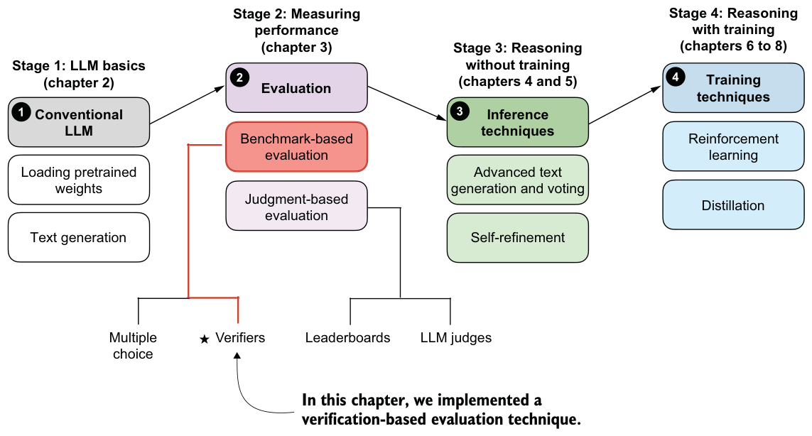

Loading the .jsonl file programmatically
.jsonl file suffix is a convention used for JSON files with one data entry per row. You can view it in your favorite text editor. Optionally, you can load the .jsonl file created during the evaluation in Python using the following code:dev_name = str(device).replace(":", "-")
local_path = f"math500_{WHICH_MODEL}-{dev_name}.jsonl"results = []
with open(local_path, "r") as f:
for line in f:
if line.strip():
results.append(json.loads(line))The reasoning model variant, which you can enable by setting WHICH_MODEL ="reasoning" in listing 3.1, performs much better, achieving 90% accuracy on the same
10-sample subset and 50.8% on the complete 500-sample dataset, as shown in table 3.1.
| Mode | Device | Accuracy | MATH-500 size |
|---|---|---|---|
| Base | CPU | 30% | 10 |
| Base | CUDA | 30% | 10 |
| Base | MPS | 30% | 10 |
| Reasoning | CPU | 90% | 10 |
| Reasoning | CUDA | 90% | 10 |
| Reasoning | MPS | 80% | 10 |
| Base | CUDA | 15.3% | 500 |
| Reasoning | CUDA | 50.8% | 500 |
As shown in table 3.1, the reasoning variant, with its longer responses, has drastically improved accuracy, but it also increases compute intensity and answer generation time substantially (from 0.4 minutes for the base model to 7 minutes for the reasoning model on a Mac Mini with an M4 chip on the 10-sample subset, and from 13.3 minutes to 185.4 minutes on an NVIDIA H100 GPU on the 500-sample dataset), which highlights one of the tradeoffs of using reasoning models. Note that these numbers were obtained in PyTorch 2.8 and can differ across PyTorch versions.
128 to evaluate all 500 samples reduces the running time of the base model from 13.3 minutes to 3.3 minutes on an H100 GPU. Similarly, it reduces the running time of the reasoning model from 185.4 minutes to 14.6 minutes.
Note that the H100 is used as an example here; the script is compatible with other GPUs as well.
Exercise 3.2: Calculating the average response length
evaluate_math500_stream function (listing 3.15). Instead of modifying the function directly, you could also compute the response length from the generated JSON report files.Exercise 3.3: Extending or changing the evaluation dataset
Exercise 3.4: Experimenting with different prompt templates
apply_chat_template=True setting in the tokenizer (listing 3.1) and observe whether it improves base model performance.This concludes our implementation of a verification-based approach for math tasks (figure 3.11). I chose math because it is both natural to implement and widely used in reasoning-specific training, particularly reinforcement learning with verifiable rewards, which we’ll cover in chapter 6. The same concept can be extended to other domains, such as code; we didn’t explore that here because executing code would involve setting up a secure virtual environment.
Before we move on, it’s worth noting that evaluation also comes in many other flavors. In this chapter, we focused on verification-based accuracy for math problems because it is a popular method and because we will reuse this verifier as part of the reinforcement learning pipeline in chapters 6 and 7. For a broader overview, appendix
F walks through other common evaluation strategies, such as multiple-choice benchmarks, verifiers, leaderboards, and LLM-as-judge setups. It also includes hands-on examples if you want a quick tour of how these methods work in practice.
Now that we have an evaluation framework in place, the next chapter will focus on improving reasoning capabilities through more advanced inference (text generation) techniques.

Summary
- There are four main evaluation methods for LLMs: multiple choice, verifiers, leaderboards, and LLM judges.
- Verification-based evaluation methods allow free-form answers and use external tools to check correctness.
- This chapter focuses on verification-based evaluation by building a math verifier that extracts, normalizes, and checks answers with SymPy.
- The verification pipeline involves several core steps, from loading the LLM to running the evaluation on a dataset.
- As part of the verification pipeline, answer extraction uses string parsing to locate boxed content (with fallback mechanisms for missing boxes).
- Another step implements normalization, which standardizes diverse answer formats by stripping LaTeX and converting mathematical notation.
- Finally, the pipeline uses mathematical equivalence checking (via SymPy) to compare expressions symbolically.
- The MATH-500 dataset provides 500 curated math problems for evaluation.
- Prompt templates significantly impact model performance.
- The reasoning model achieves higher accuracy than the base model, but it requires a much longer running time.